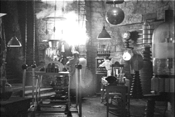

Copyright © Cay S. Horstmann 2015 
This work is licensed under a Creative Commons Attribution 4.0 International License
Note: The content of units 13 and 14 is adapted from the slides of "Functional Programming in Scala" by Prof. Martin Odersky.
A list having
as elements is written List()
Example:
val fruit = List("apples", "oranges", "pears")
val nums = List(1, 2, 3, 4)
val diag3 = List(List(1, 0, 0), List(0, 1, 0), List(0, 0, 1))
val empty = List()There are two important differences between lists and arrays.
The figures below show the recursive structure of the fruit and diag3 lists.
| |
|
All lists are constructed from:
Nil, and:: (pronounced cons): x :: xs gives a new list with the first element x, followed by the elements of xs.For example:
fruit = "apples" :: ("oranges" :: ("pears" :: Nil))
nums = 1 :: (2 :: (3 :: (4 :: Nil)))
empty = NilAll operations on lists can be expressed in terms of the following
three operations:
head : the first element of the listtail : the list composed of all the elements except the first.isEmpty : true if the list is empty, false otherwise.These operations are defined as methods of objects of type list.
Example:
fruit.head == "apples"
fruit.tail.head == "oranges"
diag3.head == List(1, 0, 0)
empty.head == throw new NoSuchElementException("head of empty list")It is also possible to decompose lists with pattern matching.
Nil |
The Nil constant |
p :: ps |
A pattern that matches a list with a head matching p and a tail matching ps. |
| List(p1, ..., pn) | same as p1 :: ... :: pn :: Nil |
Example:
1 :: 2 :: xs |
Lists that start with 1 and then 2 |
x :: Nil |
Lists of length 1 |
List(x) |
Same as x :: Nil |
List() |
The empty list, same as Nil |
List(2 :: xs) |
A list that contains as only element another list that starts with 2. |
Consider the pattern x :: y :: List(xs, ys) :: zs.
What is the condition that describes most accurately the length L
of the lists it matches?
xs.length |
The number of elements of xs |
xs.last |
The list's last element, exception if xs is empty |
xs.init |
A list consisting of all elements of xs except the last one, exception if xs is empty. |
xs take n |
A list consisting of the first n elements of xs, or xs itselfif it is shorter than n. |
xs drop n |
The rest of the collection after taking n elements. |
xs(n) |
(or, written out, xs apply n). The element of xs at index n. |
xs ++ ys |
The list consisting of all elements of xs followed by all elements of ys. |
xs.reverse |
The list containing the elements of xs in reversed order |
xs updated (n, x) |
The list containing the same elements as xs, except at index n where it contains x |
xs indexOf x |
The index of the first element in xs equal to x or -1 if x does not apear in xs. |
xs contains x |
same as xs indexOf x >= 0 |
Functions on lists often have similar structures.
We can identify several recurring patterns, like,
Functional languages allow programmers to write generic functions
that implement patterns such as these using higher-order functions.
A common operation is to transform each element of a list and then
return the list of results.
For example, to multiply each element of a list by the same factor, you could write:
def scaleList(xs: List[Double], factor: Double): List[Double] = xs match {
case Nil => xs
case y :: ys => y * factor :: scaleList(ys, factor)
}This scheme can be generalized to the method map of the
List class. A simple way to define map is as follows:
abstract class List[T] { ...
def map[U](f: T => U): List[U] = this match {
case Nil => this
case x :: xs => f(x) :: xs.map(f)
}(in fact, the actual definition of map is a bit different, also it works for arbitrary
collections, not just lists).
Using map, scaleList can be written more concisely.
def scaleList(xs: List[Double], factor: Double) =
xs map (x => x * factor)Consider a function to square each element of a list, and
return the result. Complete the two following equivalent definitions of
squareList.
def squareList(xs: List[Int]): List[Int] = xs match {
case Nil => ???
case y :: ys => ???
}
def squareList(xs: List[Int]): List[Int] =
xs map ???
Another common operation on lists is the selection of all elements
satisfying a given condition. For example:
def posElems(xs: List[Int]): List[Int] = xs match {
case Nil => xs
case y :: ys => if (y > 0) y :: posElems(ys) else posElems(ys)
}This pattern is generalized by the method filter of the List class:
abstract class List[T] {
...
def filter(p: T => Boolean): List[T] = this match {
case Nil => this
case x :: xs => if (p(x)) x :: xs.filter(p) else xs.filter(p)
}
}Using filter, posElems can be written more concisely.
def posElems(xs: List[Int]): List[Int] =
xs filter (x => x > 0)Besides filter, there are also the following methods that extract
sublists based on a predicate:
xs filterNot p |
Same as xs filter (x => !p(x)); The list consisting of those elements of xs that do not satisfy the predicate p |
xs partition p |
Same as (xs filter p, xs filterNot p), but computed in a single traversal of the list xs |
xs takeWhile p |
The longest prefix of list xs consisting of elements that all satisfy the predicate p. |
xs dropWhile p |
The remainder of the list xs after any leading elements satisfying p |
xs span p |
Same as (xs takeWhile p, xs dropWhile p)but computed in a single traversal of the list xs |
Write a function pack that packs consecutive duplicates of list elements into sublists. For instance,
pack(List("a", "a", "a", "b", "c", "c", "a"))should give
List(List("a", "a", "a"), List("b"), List("c", "c"), List("a")).You can use the following template:
def pack[T](xs: List[T]): List[List[T]] = xs match {
case Nil => Nil
case x :: xs1 => ???
}Using pack, write a function encode that produces the run-length
encoding of a list.
The idea is to encode n consecutive duplicates of an element x as a pair (x, n). For instance,
encode(List("a", "a", "a", "b", "c", "c", "a")should give
List(("a", 3), ("b", 1), ("c", 2), ("a", 1)).A Stream is like a list except that its elements are computed lazily.
Because of this, a stream can be infinitely long. Only those elements requested are computed. Otherwise, streams have the same performance characteristics as lists.
Whereas lists are constructed with the :: operator, streams are constructed with the similar-looking #::
Here is a simple example of a stream containing the integers 1, 2, and 3:
val str = 1 #:: 2 #:: 3 #:: Stream.empty //> str: scala.collection.immutable.Stream[Int] = Stream(1, ?)The head of this stream is 1, and the tail of it has 2 and 3. The tail is not printed here, though, because it hasn't been computed yet! Streams are specified to compute lazily.
Below is a more interesting example. It computes a stream that contains a Fibonacci sequence starting with the given two numbers.
A Fibonacci sequence is one where each element is the sum of the previous two elements in the series.
def fibFrom(a: Int, b: Int): Stream[Int] = a #:: fibFrom(b,a + b)
//> fibFrom: (a: Int, b: Int)Stream[Int]This function is deceptively simple:
a, and b followed by a + b.The tricky part is computing this sequence without causing an infinite recursion!
If the function used :: instead of #::, then every call to the function would result in another call,
thus causing an infinite recursion. Since it uses #::, though, the right-hand side is not evaluated until it is requested.
Here are the first few elements of the Fibonacci sequence starting with two ones:
val fibs = fibFrom(1, 1).take(7)
//> fibs : scala.collection.immutable.Stream[Int] = Stream(1, ?)
fibs.toList
//> res4: List[Int] = List(1, 1, 2, 3, 5, 8, 13)We have seen that lists are linear: Access to the first element is much faster than access to the middle or end of a list.
The Scala library also defines an alternative sequence implementation, Vector.
This one has more evenly balanced access patterns than List.
Vectors are created analogously to lists:
val nums = Vector(1, 2, 3, -88)
val people = Vector("Bob", "James", "Peter")
They support the same operations as lists, with the exception of ::
Instead of x :: xs, there is
x +: xs Create a new vector with leading element x, followed by all elements of xs.
xs :+ x Create a new vector with trailing element x, preceded by all elements of xs.
(Note that the : always points to the sequence.)
A common base class of Vector, List and Stream is Seq, the class of all sequences.
Seq itself is a subclass of Iterable.

Arrays and Strings support the same operations as Seq and can
implicitly be converted to sequences where needed.
(They cannot be subclasses of Seq because they come from Java)
val xs: Array[Int] = Array(1, 2, 3)
xs map (x => 2 * x)
val ys: String = "Hello world!"
ys filter (_.isUpper)
Another simple kind of sequence is the range.
It represents a sequence of evenly spaced integers.
Three operators:
to (inclusive), until (exclusive), by (to determine step value):
val r: Range = 1 until 5 //> r : Range = Range(1, 2, 3, 4)
val s: Range = 1 to 5 //> s : Range = Range(1, 2, 3, 4, 5)
1 to 10 by 3 //> res1: scala.collection.immutable.Range = Range(1, 4, 7, 10)
6 to 1 by -2 //> res2: scala.collection.immutable.Range = Range(6, 4, 2)Ranges are represented as single objects with three fields:
lower bound, upper bound, step value.
xs exists p |
true if there is an element x of xs such that p(x) holds, false otherwise |
xs forall p |
true if p(x) holds for all elements x of xs,false otherwise. |
xs zip ys |
A sequence of pairs drawn from corresponding elements of sequences xs and ys. |
xs.unzip |
Splits a sequence of pairs xs into two sequences consisting of the first, respectively second halves of all pairs. |
xs.flatMap f |
Applies collection-valued function f to all elements of xs and concatenates the results. |
xs.sum |
The sum of all elements of this numeric collection |
xs.product |
The product of all elements of this numeric collection |
xs.max |
The maximum of all elements of this collection (an ordering must exist) |
xs.min |
The minimum of all elements of this collection |
To list all combinations of numbers x and y where x is drawn from 1..M and y is drawn from 1..N:
(1 to M) flatMap (x => To list all combinations of numbers x and y where x is drawn from 1..M and y is drawn from 1..N:
(1 to M) flatMap (x => (1 to N) map (y => (x, y))) To compute the scalar product of two vectors:
def scalarProduct(xs: Vector[Double], ys: Vector[Double]): Double =
(xs zip ys).map(xy => xy._1 * xy._2).sumAn alternative way to write this is with a pattern matching function value.
def scalarProduct(xs: Vector[Double], ys: Vector[Double]): Double =
(xs zip ys).map{ case (x, y) => x * y }.sumGenerally, the function value
{ case p1 => e1 ... case pn => en }is equivalent to
x => x match { case p1 => e1 ... case pn => en }A number n is prime if the only divisors of n are 1 and n itself.
What is a high-level way to write a test for primality of numbers?
For once, value conciseness over efficiency.
def isPrime(n: Int): Boolean = ???
grouped methode to form groups of N elements.drop(3, List('a', 'b', 'c', 'd', 'e', 'f', 'g', 'h', 'i', 'j', 'k')).toList
//> res1: List[Char] = List(a, b, d, e, g, h, j, k)N places to the left. rotate(3, List('a', 'b', 'c', 'd', 'e', 'f', 'g', 'h', 'i', 'j', 'k'))
//> res2: List[Char] = List(d, e, f, g, h, i, j, k, a, b, c)compress(List('a', 'a', 'a', 'b', 'b', 'c', 'a', 'a', 'd', 'd', 'e'))
//> res3: List[Char] = List(a, b, c, a, d, e)insertAt('n', 2, List('a', 'b', 'c', 'd', 'e'))
//> res4: List[Char] = List(a, b, n, c, d, e)